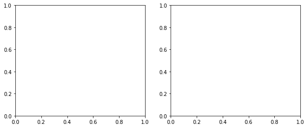
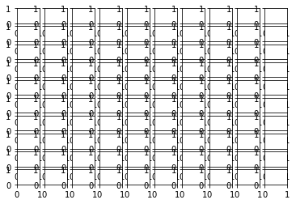
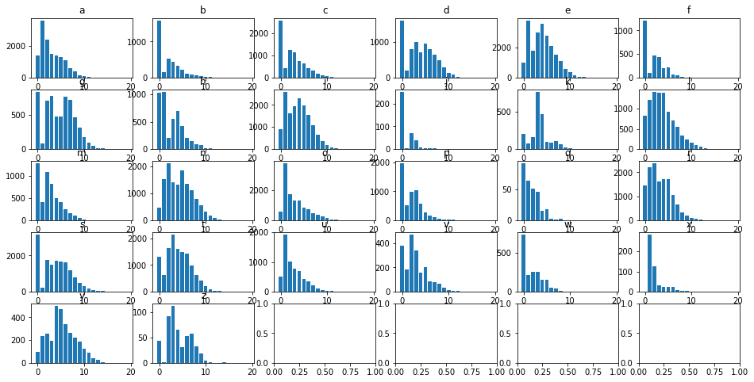
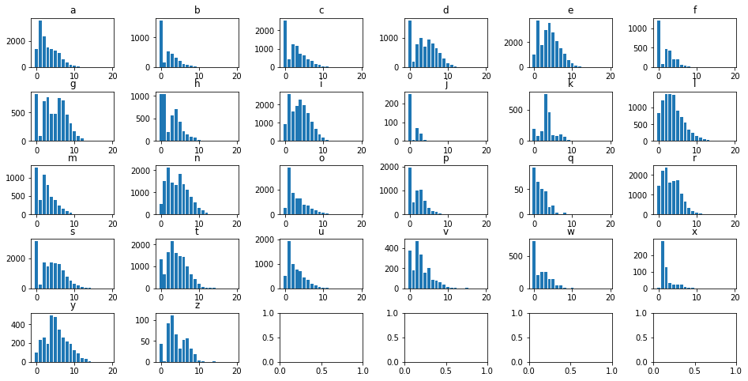
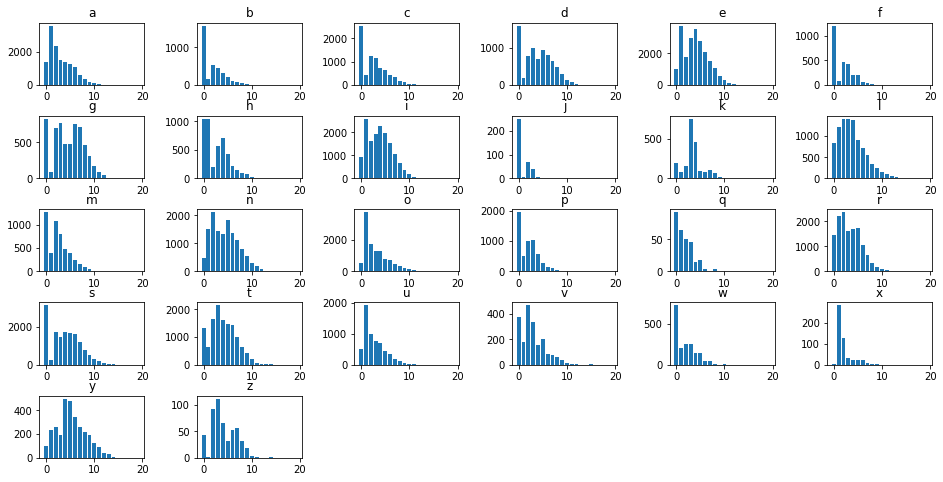

Subplots Tips and Tricks
Typically, one of your first steps that when you’re doing data viz in matplotlib is to make a blank canvas to draw on.
This of course returns a Figure object and an Axis object.
%pylab inline
fig, ax = plt.subplots()Populating the interactive namespace from numpy and matplotlib

And if you’re interested in making multiple plots together in the same figure, you pass in nRows and nCols arguments. To instead make the second return argument an array of Axis objects.
fig, axes = plt.subplots(1, 2, figsize=(10, 4))
However, this can get unwieldy when dealing with a large number of rows and columns– not only from an aesthetic standpoint, but also from a “How do I put my visualization into the cell I want?”
fig, axes = plt.subplots(10, 10)
Our Data
We have a .csv on hand that looks at the distribution of where letters occur in popular English words. It’s got a column for each letter and 15 rows of data.
import pandas as pd
df = pd.read_csv('../data/letterDists.csv')
df.head()| a | b | c | d | e | f | g | h | i | j | ... | q | r | s | t | u | v | w | x | y | z | |
|---|---|---|---|---|---|---|---|---|---|---|---|---|---|---|---|---|---|---|---|---|---|
| 0 | 1405 | 1566 | 2533 | 1595 | 988 | 1198 | 825 | 1036 | 915 | 250 | ... | 92 | 1442 | 3135 | 1323 | 499 | 377 | 728 | 1 | 98 | 44 |
| 1 | 3554 | 150 | 438 | 202 | 3739 | 91 | 83 | 1040 | 2577 | 4 | ... | 64 | 2227 | 220 | 624 | 1914 | 182 | 208 | 282 | 238 | 1 |
| 2 | 2368 | 518 | 1223 | 793 | 1784 | 460 | 703 | 205 | 1618 | 70 | ... | 51 | 2364 | 1737 | 1645 | 1006 | 469 | 257 | 127 | 259 | 93 |
| 3 | 1506 | 442 | 1139 | 1007 | 3003 | 429 | 776 | 558 | 1937 | 39 | ... | 46 | 1618 | 1473 | 2138 | 762 | 338 | 258 | 32 | 192 | 112 |
| 4 | 1371 | 317 | 729 | 702 | 3565 | 206 | 477 | 699 | 2296 | 7 | ... | 15 | 1708 | 1706 | 1611 | 705 | 158 | 147 | 22 | 498 | 65 |
5 rows × 26 columns
Iterating Through Each Figure
Conceptually, we want to simultaneously iterate through each column of data and through each of our axes making a plot for each step along the way.
Simultaneous iteration should set off the zip alarm in your head, and by using the axes.flatten() method, we don’t have to go through the hastle of nested for loops to deal with a variable number of rows and columns in our figure.
fig, axes = plt.subplots(5, 6, figsize=(16, 8))
for col, ax in zip(df.columns, axes.flatten()):
ax.bar(df.index, df[col])
ax.set_title(col)
Spacing Out
But this is pretty cluttered.
Thankfully, we can use the subplots_adjust function to tune the layout of each subplot.
Specifically, we’re going to modify the wspace and hspace arguments, which are defined in the docs as
the amount of (height/width) reserved for space between subplots, expressed as a fraction of the average axis (height/width)
The size of the subplots themselves will scale to fill the other n% of the height/width, automatically.
fig, axes = plt.subplots(5, 6, figsize=(16, 8))
for col, ax in zip(df.columns, axes.flatten()):
ax.bar(df.index, df[col])
ax.set_title(col)
plt.subplots_adjust(wspace=.5, hspace=.5)
Cleaning Up Remainder
Finally, we made a 5x6 figure because 26 doesn’t divide evently into a 5x5 or a 4x6. However, as a result, those last 4 cells detract from the rest of the figures.
We can manually delete them using the fig.delaxes() function, and manually specifying what cells to delete.
fig, axes = plt.subplots(5, 6, figsize=(16, 8))
for col, ax in zip(df.columns, axes.flatten()):
ax.bar(df.index, df[col])
ax.set_title(col)
plt.subplots_adjust(wspace=.5, hspace=.5)
fig.delaxes(axes[4, 2])
fig.delaxes(axes[4, 3])
fig.delaxes(axes[4, 4])
fig.delaxes(axes[4, 5])
But this can be tedious and makes for bloated, repetitive code. Instead, consider the following trick that uses:
- The
enumerate()function to figure out where the iteration left off - The
elsestatement after aforloop to delete each subplot in the rest of the figure
fig, axes = plt.subplots(5, 6, figsize=(16, 8))
for idx, (col, ax) in enumerate(zip(df.columns, axes.flatten())):
ax.bar(df.index, df[col])
ax.set_title(col)
plt.subplots_adjust(wspace=.5, hspace=.5)
else:
[ax.set_visible(False) for ax in axes.flatten()[idx+1:]]